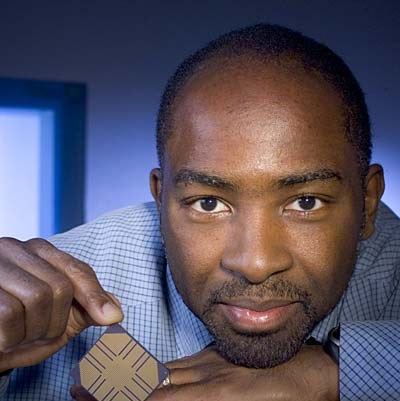

Kunle Olukotun
Olukotun is currently a professor of Electrical Engineering and Computer Science at Stanford University. He is best known for leading the Hydra project at Stanford where his team created one of the world's first multiprocessors with thread-level speculation (TLS).
Achievements

Olukotun receives his Bachelor's degree at Calvin College.
Image Source
The image shows a dated photo of Calvin College.
Olukotun receives his PhD in Computer Engineering at the University of Michigan.
He was under direct supervision of Trevor N. Mudge throughout the graduate program.
Soon after he graduated with his PhD, he joined the EECS faculty of Stanford University.

Olukotun leads his team to create one of the first multi-core processors with thread-level speculation (TLS).
Image Source
TLS is a tecnique that utilizes parallelization to speed up multiprocessor CPUs. More information can be found here.
{kind=link}

Olukotun creates Afara Websystems with the goal of creating server systems with lots of processes using low power.
Image Source
The image shows the logo of Afara Websystems.
Fun Fact: Afara Websystems created the world's first 8 core processor that utilizes 8 threads.
Fun Fact #2: Afara Websystems was bought by Sun Microsystems in 2002.

Olukotun becomes part of the team that eventually creates the UltraSPARC T1 processor.
Image Source
The image is a micrograph of the UltraSPARC processor.

Olukotun creates the Pervasive Parallelism Lab (PPL) with the goal of making the process of writing software for multi-core processors easier.
Image Source
The image is PPL's official logo as found on their webpage.
According to the Techtalk on March 5th, 2016, Olukotun's "recent work focuses on domain-specific programming languages that can allow algorithms to be easily adapted to multiple different types of parallel hardware."
Impacts
Overall, Olukotun has made a great impact in the technological world. Without him, computer scientists today would still be figuring out ways of speeding up computer processes with only one core. Since he has helped advance multicore processors, the job is done easier. Not only this, but he has also made it more efficient for people to use multicore processors. Although it took a couple of steps for him to get to where he is today, each step he took made multicore processors more power efficient, saving energy and money.
Works Cited
Olukotun, Kunle. “Bio.” Kunle Olukotun, arsenalfc.stanford.edu/kunle. Accessed 29 May 2017.
“Show of 03-05-2016.” Techtalk, 5 Mar. 2016, techtalk.stratford.edu/2016/03/05/show-of-03-05-2016/. Accessed 29 May 2017.
“UltraSPARC T1.” Wikipedia, Wikimedia Foundation, 17 May 2017, en.wikipedia.org/wiki/UltraSPARC_T1. Accessed 29 May 2017.